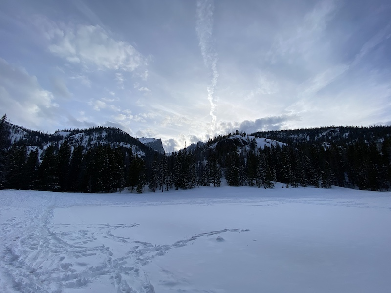
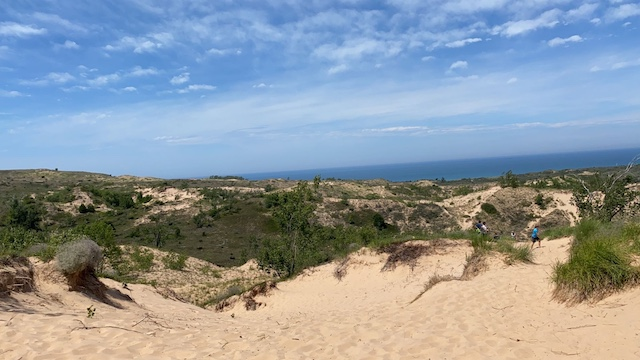
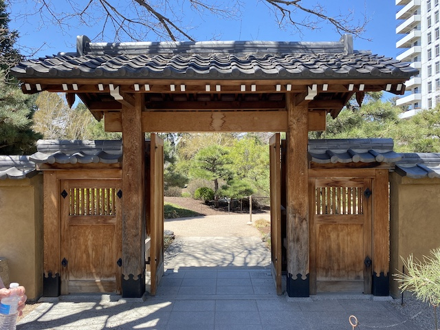

Travel Log
I hope to be able to share some of my adventures and traveling wisdom with everyone and be able to share pictures, videos, and tidbits of information along the way. Still deciding what to do with this page and how to approach it right now. But for the time being, enjoy some of my favorite destinations thus far!
Estes Park Colorado
Sleepy Bear Dunes Michigan
China Town Chicago